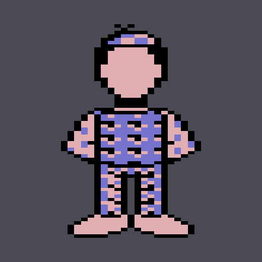
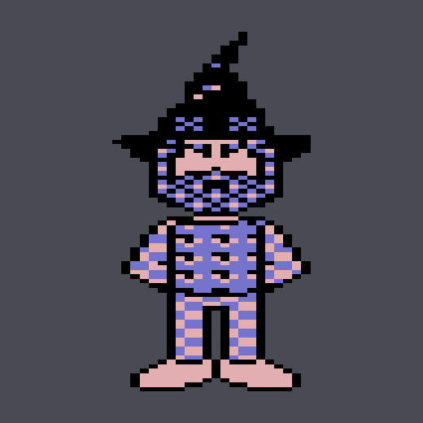
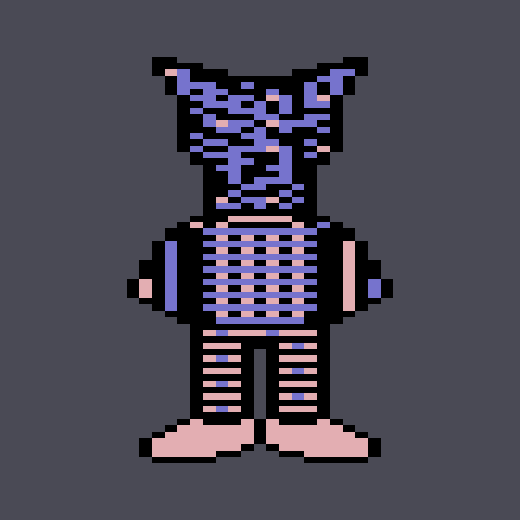

Habitat's avatars have always been flat. Even the 3D diorama client draws them as billboards — cardboard cutouts standing on real floor geometry.
They don't have to be. In 1986 the artists drew every avatar and every head three times: from the side, from the front, and from behind. Three silhouettes, ninety degrees apart, are exactly what you need to reconstruct a solid — so a genuinely three-dimensional Habitat avatar can be recovered from the original art rather than modelled by hand. All 160-plus heads come along for free.

Any angle, or let it spin. Snap buttons for front, side and back.
All seven body styles — the human plus the six creature bodies — all 160-plus heads, height and sex, and the three poses that can rotate.
Four pickers — legs, torso, arms, hair — showing the sixteen real C64 dither patterns as swatches instead of as numbers. The same four slots the in-world spray can paints.
One full seamless turn as an animated GIF, named for what is in it —
habitat-human-wizard0-6968.gif is the body, the head, and the four paint
values in hex. Every animation on this page came out of that button.
Each straight-on view rendered from the solid, side by side with the same frame drawn by the ordinary 2D client, and a pixel diff between them.


Seen from the front and from the side, an object casts two shadows. Anything solid must fit inside both — intersect them and you get the visual hull, the largest shape consistent with every view you have. That is the whole idea, and it suits Habitat for two reasons.
First, the art is already per-limb. Reconstructing a whole body at once smears it: the arm's depth gets applied at the torso's width and the figure inflates into a slab. Habitat avoids that for free, because the 1986 figure compositor already draws six independent limb cels — so each limb is reconstructed on its own and assembled afterwards.
Second, the third coordinate is already in the data. The client's existing
limb chain — the ported 1986 animate.m — is run once per view, and a limb's
horizontal position in the side drawing simply is how far forward or back
it sits. Nothing is estimated, hand-tuned, or eyeballed.
Colours come straight from the cels, with no lighting at all: each face of the solid wears the view that looks at it. The artists already painted the difference between a front and a profile, and a modern light on top of that only muddies it. The blocks are deliberately not cubes — a C64 multicolor pixel is twice as wide as it is tall, and the reconstruction keeps that, which is what makes a straight-on view land exactly on the original pixel grid.
Close enough to check by machine, which is the point of the fidelity panel. Viewed from the front, the solid is pixel-for-pixel identical to what the 2D client draws — same silhouette, same colours — for every body, every head and every pose. That is verified automatically rather than admired by eye.
The other views cannot be perfect, and the reasons are the interesting part:
The front and back cels were drawn separately and don't match, so no single object can reproduce both. The back art paints the far side of the figure; it doesn't reshape it.
Measured on the standing human, the side cels run two to eight rows taller than the front cels — legs, torso and arms all disagree. A solid has one height per limb, so the front wins, and the side view comes out about 8% different at rest.
Seen from the side it is hidden behind the body, so 1986 simply left it out. The reconstruction borrows the profile of the near arm — the one drawing Habitat does have of "an arm, from the side".
None of these are bugs to be fixed. They are what happens when you ask hand-drawn art from three separate afternoons to describe one object.
Only standing, walking and sitting were drawn from all three directions. Gestures — waving, pointing, bending over, throwing, punching — exist only in profile. There is no front-facing wave in Habitat, and inventing one would be authorship rather than restoration, so the lab doesn't offer it.
This is an experiment, and a young one. It is a standalone workbench: the 2D client and the 3D diorama client are untouched and still billboard their avatars. Putting solid figures into the world itself is the obvious next step, and hasn't been taken yet.
The most visible rough edge: a head reconstructs to something close to a cube, so at a three-quarter angle it can read as two flat portraits meeting at an edge. Rounding the head hard mostly resolves it — there's a slider — but blending the faces by viewing angle is the real fix.
Julien Dorra's dress-up lab, which shows the three views the artists drew. This experiment reconstructs what lies between them.
THE INSPECTORBrowse — and edit — the original Habitat art and regions these figures are decoded from.
ALL THE EXPERIMENTSSagebot, the 3D diorama client, the text-mode client, habisound, and the rest of the family.
Questions? Join the NeoHabitat Discord.